CLO 2026 메뉴 기능 사전: 2D·3D부터 모션·렌더·CLO-SET까지
2026.09.07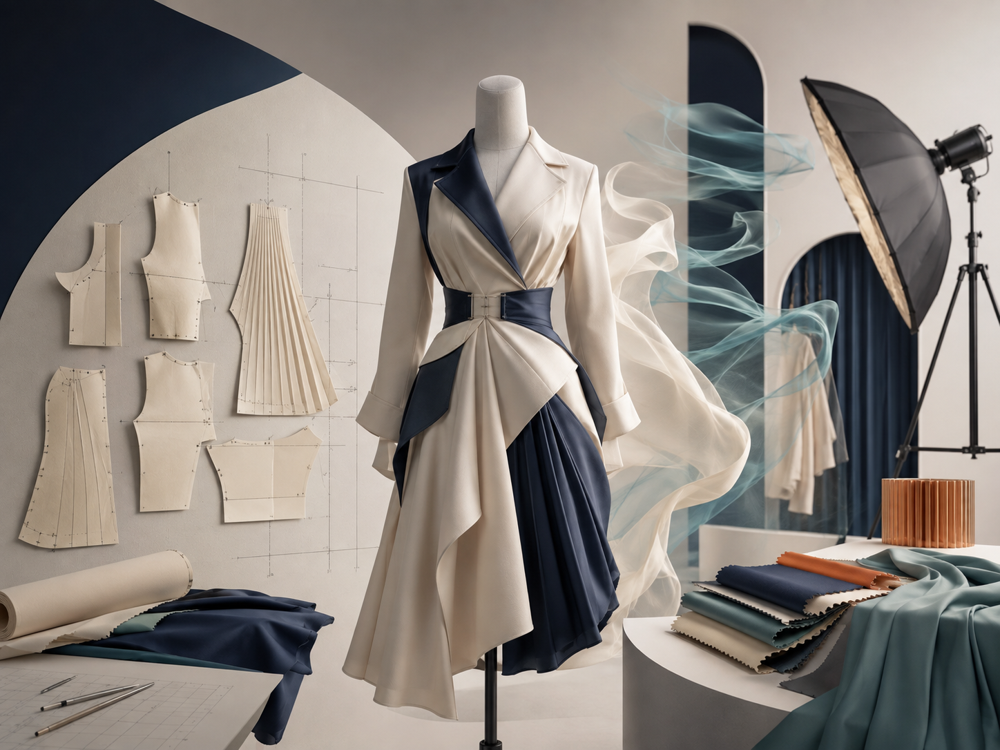
CLO 2026.1 실제 화면을 기준으로 상단 메뉴와 핵심 하위 메뉴를 하나씩 펼쳐 설명한 기능 사전입니다. 메뉴 이름, 하는 일, 언제 쓰는지, 초보자가 자주 헷갈리는 지점을 실제 캡처와 함께 바로 찾아볼 수 있습니다.
이 글은 의상 한 벌을 만드는 순서표가 아니라, 작업 중 “그 기능이 어디 있었지?” 할 때 찾아보는 CLO 메뉴 설명서입니다. 특정 강의 진행 순서와 분리해 필요한 메뉴를 바로 찾아볼 수 있게 구성했습니다. 확인한 프로그램은 CLO 2026.1.224 (r58461)입니다. 버전·언어·워크스페이스에 따라 아이콘 위치나 일부 베타 기능은 달라질 수 있지만, 아래 상단 메뉴 이름을 기준으로 찾으면 됩니다.
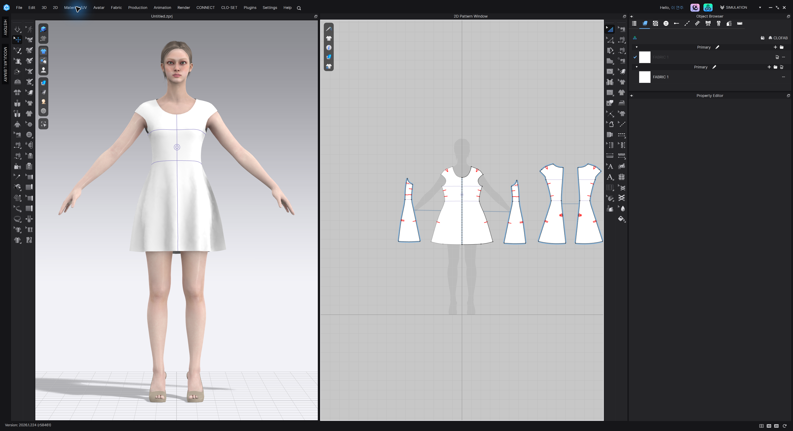
메뉴를 읽기 전에: 툴바 아이콘은 길게 눌러 보기
CLO 툴바에는 여러 도구가 한 아이콘 안에 겹쳐 있는 그룹이 많습니다. 짧게 누르면 현재 대표 도구가 실행되고, 약 2초간 길게 누르면 같은 그룹의 하위 도구가 펼쳐집니다. 예를 들어 Select Mesh에는 Brush·Box·Lasso가 묶여 있습니다. 길게 누르기가 잘 안 되거나 아이콘을 잊었다면 상단 메뉴를 펼쳐 같은 기능명을 찾으면 됩니다. 아래 캡처는 이 방식으로 확인한 실제 메뉴입니다. 툴바 아이콘의 대부분의 메뉴는 상단 메뉴에도 있습니다.
1. File — 만들기·열기·저장·가져오기·내보내기
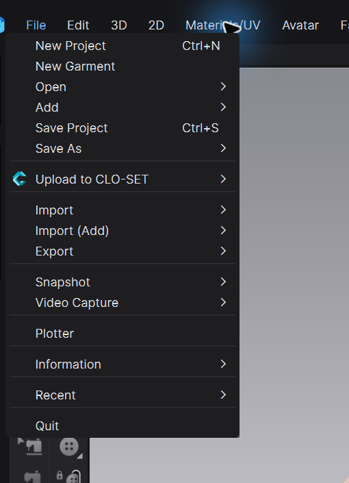
• New Project: 새 프로젝트를 시작합니다. 현재 작업을 저장하지 않았다면 먼저 저장 여부를 확인하세요. • New Garment: 현재 장면의 아바타·환경을 유지하면서 새 의상 작업을 시작할 때 씁니다. • Open: 저장된 프로젝트나 지원 파일을 새로 엽니다. 현재 장면을 교체하는 쪽입니다. • Add: 현재 프로젝트에 다른 의상·아바타·소품을 추가합니다. Open과 달리 기존 장면을 남깁니다. • Save Project / Save As: ZPRJ를 저장하거나 다른 이름·버전으로 복제합니다. • Upload to CLO-SET: 현재 콘텐츠를 CLO-SET으로 보냅니다. 새 콘텐츠와 새 버전을 구분해야 합니다. • Import / Import (Add): 외부 파일을 새로 불러오거나 현재 장면에 추가합니다. • Export: 의상·아바타·패턴·캐시 등을 외부 형식으로 내보냅니다. • Snapshot / Video Capture: 현재 3D 화면을 이미지 또는 영상으로 기록합니다. 최종 V-Ray 렌더와는 다릅니다. 패턴을 pdf나 캐드파일로 내보내거나 현재 3D창의 캡쳐를 저장합니다. 비디오의 경우 턴테이블과 미리 적용된 애니메이션을 빠르게 녹화 저장합니다. 이는 시간이 오래걸리는 렌더방식과는 다른 경량 녹화입니다. • Plotter: 패턴 출력 장비와 연결합니다. • Information: 프로젝트·파일 정보를 확인합니다. • Recent: 최근 열었던 파일로 빠르게 이동합니다. • Quit: CLO를 종료합니다.
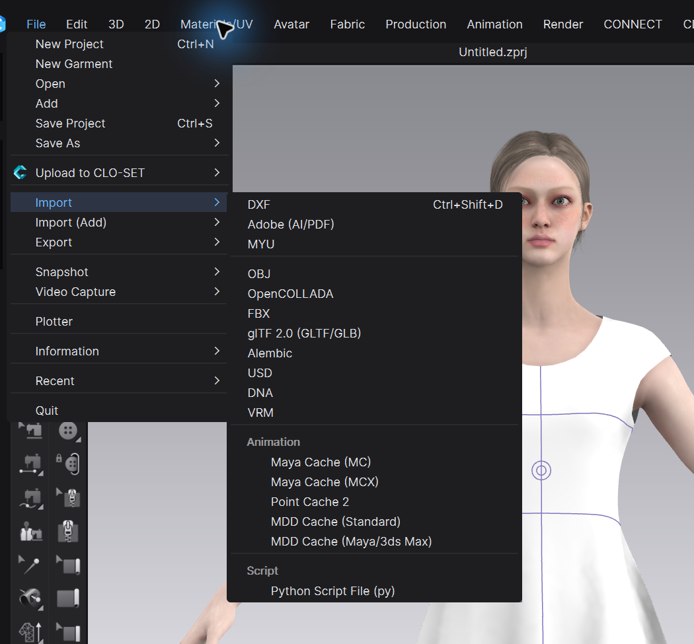
Import에는 DXF, Adobe AI/PDF, MYU 같은 2D 패턴 형식과 OBJ, OpenCOLLADA, FBX, glTF 2.0, Alembic, USD, DNA, VRM 같은 3D 형식이 함께 있습니다. Animation 그룹에는 Maya Cache, Point Cache 2, MDD Cache 등이 있고 Python Script File도 불러올 수 있습니다. OBJ/FBX가 “보인다”는 것과 의상 충돌체·아바타·트림으로 올바르게 등록됐다는 것은 다릅니다. 가져오기 창에서 Scale, Axis, Object Type, Animation 포함 여부를 반드시 확인하세요.
2. Edit — 방금 한 작업과 선택을 관리
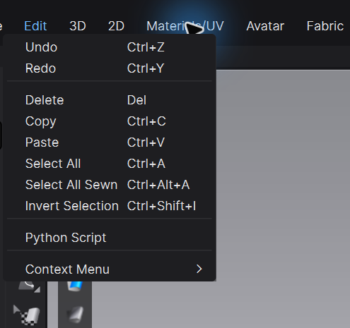
• Undo / Redo: 직전 작업을 되돌리거나 다시 적용합니다. 시뮬레이션 결과 전체가 원하는 시점으로 완벽히 돌아간다고 가정하지 말고 주요 단계는 파일 버전도 나누세요. • Delete: 선택한 패턴·선·오브젝트를 삭제합니다. • Copy / Paste: 선택 대상을 복제합니다. 대칭 패턴은 단순 복사보다 Linked Editing이 필요한지 먼저 판단하세요. • Select All / Select All Sewn / Invert Selection: 전체, 봉제된 대상, 반대 선택으로 범위를 바꿉니다. • Python Script: 반복 작업용 스크립트를 실행합니다. 출처와 대상 파일을 확인한 뒤 사용하세요. • Context Menu: 현재 선택 대상에서 사용할 수 있는 우클릭 기능을 엽니다. Strengthen, Freeze, Solidify처럼 상단 고정 메뉴에 보이지 않는 기능을 찾을 때 중요합니다.
3. 3D — 시뮬레이션·메쉬 선택·배치·입체선·측정
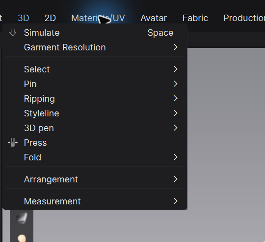
• Simulate: 봉제된 2D 패턴을 물리 계산해 아바타 위에서 떨어뜨립니다. Space 단축키로 켜고 끌 수 있습니다. • Garment Resolution: 의상 메쉬 해상도와 관련된 기능입니다. 처음부터 전부 고해상도로 올리면 계산이 무거워집니다. • Select: 의상 전체 또는 메쉬 일부를 선택·이동합니다. • Pin: 점이나 영역을 현재 공간에 임시 고정합니다. 작업이 끝나면 남은 핀을 확인하세요. • Ripping: 봉제선이 뜯어지는 표현과 편집에 사용합니다.(새로운 기능, ex: 찢어진 청바지 등) • Styleline: 3D 의상 표면에 디자인 선을 그리거나 편집합니다. • 3D pen: 의상·아바타 표면에 3D 선을 만들고 편집합니다. • Press: 프레스 효과를 적용합니다. • Fold: 접기 초기 배치와 접힘 형태를 다룹니다. • Arrangement: 패턴을 아바타 주변에 재배치하거나 초기 배치를 다시 계산합니다. • Measurement: 아바타와 의상의 선형·둘레 치수를 측정합니다.
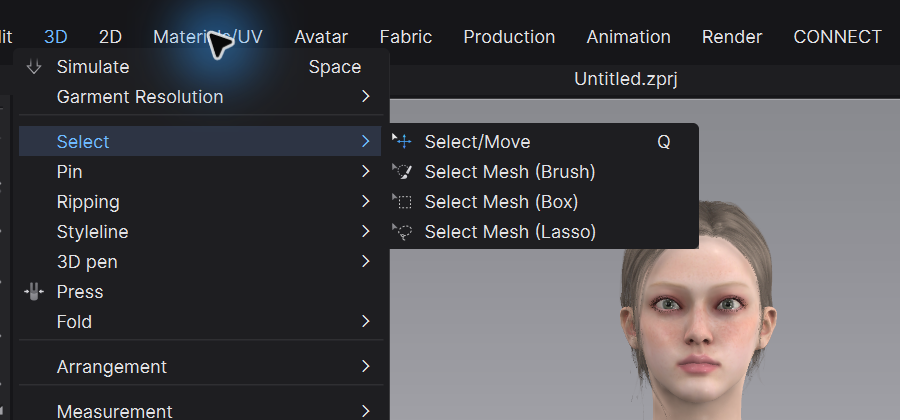
• Select/Move: 의상이나 선택 대상을 이동·회전합니다. • Select Mesh (Brush): 붓으로 칠하듯 불규칙한 영역을 고릅니다. 주름 일부처럼 경계가 자유로운 수정에 편합니다. • Select Mesh (Box): 사각형 안을 한 번에 선택합니다. 반듯한 범위나 넓은 영역에 빠릅니다. • Select Mesh (Lasso): 올가미로 감싼 영역을 선택합니다. 특정 실루엣을 따라 고를 때 씁니다. CLO에는 ZBrush 같은 독립 Sculpt 메뉴가 없습니다. 메쉬 일부를 직접 잡아 형태를 정리할 때는 이 선택 도구를 쓰고, 선택 후 Context Menu나 Property Editor의 Strengthen·Freeze·Solidify 등을 목적에 맞게 조합합니다. 큰 길이·둘레·절개 오류는 3D 메쉬로 덮지 말고 2D 패턴으로 돌아가야 합니다. 실제 작업에서는 메시를 다루는 이 기능은 의상이 지나치게 파고 들었거나 안과 밖이 크게 바뀌었을때(플리츠등) 부분적으로 사용합니다.
국소 형태 제어 기능 구분 • Strengthen: 천을 임시로 빳빳하게 만들어 겹침을 풀거나 형태를 세웁니다. 해결 뒤 Unstrengthen으로 원래 물성으로 돌립니다. • Freeze: 현재 위치를 시뮬레이션에서 움직이지 않게 고정합니다. 다른 조각을 먼저 안정시킬 때 유용합니다. • Solidify: 이미 얻은 드레이프나 볼륨이 쉽게 무너지지 않도록 보존합니다. Strength 값으로 영향을 조절합니다. • Tack on Avatar: 의상의 특정 지점을 아바타에 붙잡습니다. 몸에 실제로 고정되는 디자인 지점에 씁니다. • Pressure: 닫힌 봉제 구조를 부풀려 패딩·쿠션·벌룬 볼륨을 만듭니다. 앞면 방향과 양수·음수 방향을 확인하세요. • Fold Angle: 내부선을 따라 접히는 방향과 각도를 정합니다. 칼라·커프스·플리츠처럼 선 규칙이 있는 구조에 적합합니다. 실작업에서는 강화/프리즈를 반복적으로 활성, 비활성 함으로써 의상의 핏 또는 여러 겹의 레이어를 정리할 때 굉장히 자주 사용합니다. 이와 더불어 시뮬레이션을 활성, 비활성 반복해서 순간적으로 패턴의 위치를 잡아서 원하는 핏으로 만들어 갑니다.
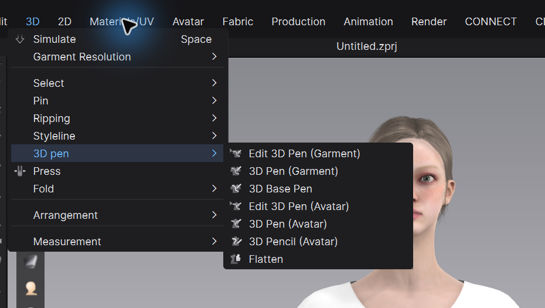
Garment용 3D Pen은 이미 시뮬레이션된 의상 위에 선을 그리고 수정할 때, Avatar용 3D Pen과 3D Pencil은 몸 표면에 기준선을 잡을 때 씁니다. 3D Base Pen은 공간의 기준선을 다룹니다. Flatten은 아바타 표면에 닫힌 선을 만든 뒤 이를 2D 씨앗 패턴으로 펼치는 기능입니다. 몸에 붙는 시작 형태를 얻는 도구이지, 활동 여유와 디자인 분량까지 자동 완성하는 기능은 아니기 때문에 flatten으로 러프한 패턴을 만들어낸 다음 3D창에서 아바타에 입힌 모습을 확인하면서 최종적인 패턴으로의 정리가 필요합니다.
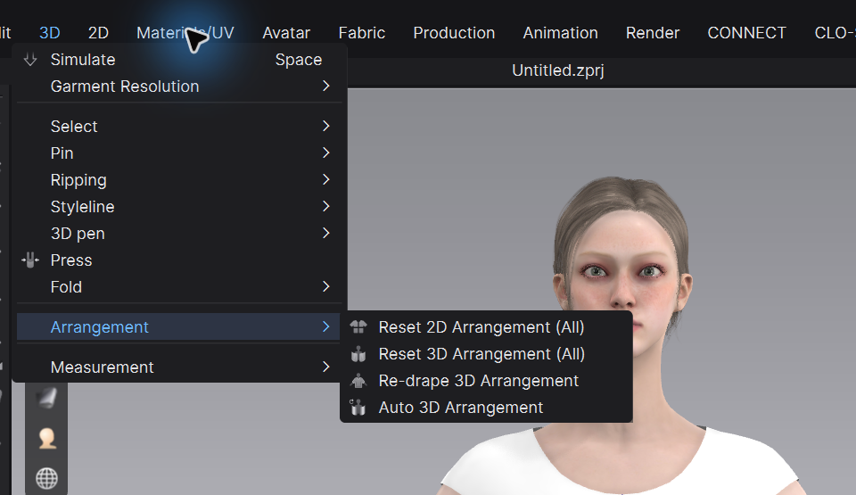
• Reset 2D Arrangement (All): 2D 창의 배치 상태를 초기 기준으로 정리합니다. • Reset 3D Arrangement (All): 모든 패턴의 3D 초기 배치를 되돌립니다. • Re-drape 3D Arrangement: 현재 의상을 다시 드레이핑합니다. • Auto 3D Arrangement: 패턴을 아바타 주변에 자동 배치합니다. 시뮬레이션이 시작하자마자 옷이 폭발하듯 꼬이면 물성보다 먼저 패턴이 몸 안에 들어갔는지, 앞·뒤 배치가 뒤집혔는지, 봉제 방향이 맞는지 확인하세요.
4. 2D — 패턴 생성·변형·봉제·그레이딩
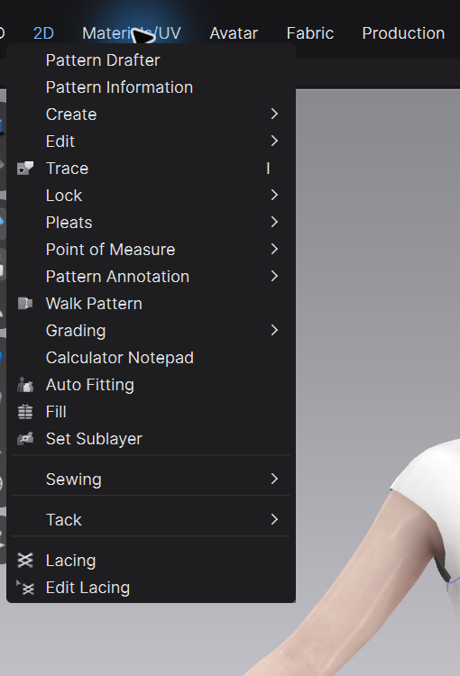
• Pattern Drafter / Pattern Information: 이미지로부터 간단한 패턴을 생성합니다(실험기능)/현재 2d창의 패턴에 대한 정보를 통합적으로 표시합니다. • Create: 외곽 패턴, 내부선, 다트, 시접, 노치 등을 만듭니다. • Edit: 패턴 전체·점·선분·곡률·분량을 수정합니다. • Trace: 내부선이나 기준선을 외곽선·패턴으로 추출합니다. • Lock: 패턴이나 선을 잠가 실수로 움직이지 않게 합니다. • Pleats: 플리츠 구조를 만들고 배치합니다. • Point of Measure: 검사할 치수 위치와 측정점을 관리합니다. • Pattern Annotation: 패턴 위에 제작용 메모와 표시를 남깁니다. • Walk Pattern: 두 패턴의 봉제선을 굴려 맞춤과 노치 위치를 확인합니다.(재봉선이 맞는지 등 확인할 때 또는 한쪽의 재봉선이 다른 쪽 어디까지 가야할지 알고싶을때) • Grading: 사이즈별 증감 규칙을 편집합니다. • Calculator Notepad: 제도 계산과 메모를 돕습니다. • Auto Fitting: 대상 아바타 체형에 맞춘 자동 피팅을 보조합니다. 결과는 봉제와 핏을 다시 검수해야 합니다. • Fill: 닫힌 영역을 패턴으로 채웁니다. • Set Sublayer: 겹치는 패턴의 충돌 순서를 보조합니다. 실제 여유량을 대신하지 않습니다. • Sewing / Tack / Lacing / Edit Lacing: 봉제선, 임시 고정, 끈 연결을 만들고 편집합니다.
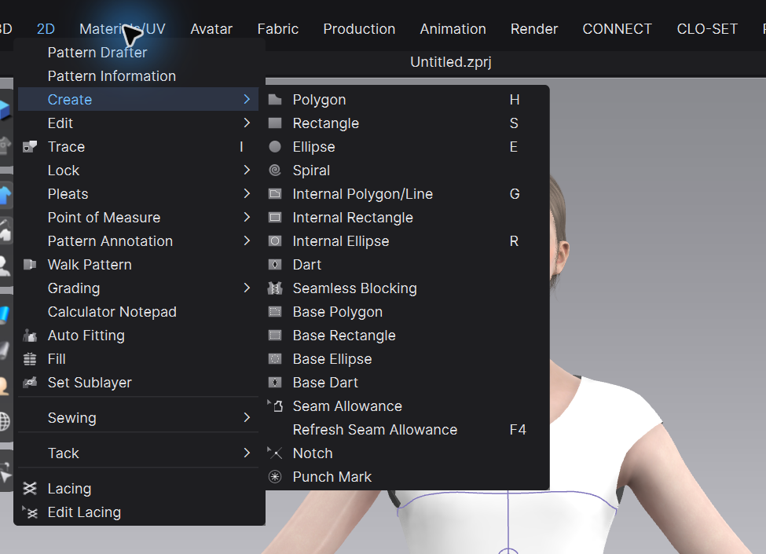
Create에는 Polygon, Rectangle, Ellipse, Spiral 같은 외곽 패턴과 Internal Polygon/Line, Internal Rectangle, Internal Ellipse, Dart가 있습니다. Seamless Blocking은 블록 전개를 보조하고, Base Polygon·Rectangle·Ellipse·Dart는 기준 형상을 만듭니다. Seam Allowance와 Refresh Seam Allowance는 시접 생성·갱신, Notch와 Punch Mark는 제작 기준 표시입니다. 외곽선을 만들 것인지, 패턴 안의 구조선을 만들 것인지부터 구분하세요. 내부선은 접힘·봉제·프레스·그래픽 기준으로 활용될 수 있지만 그 자체가 자동으로 패턴을 분리하는 것은 아닙니다.
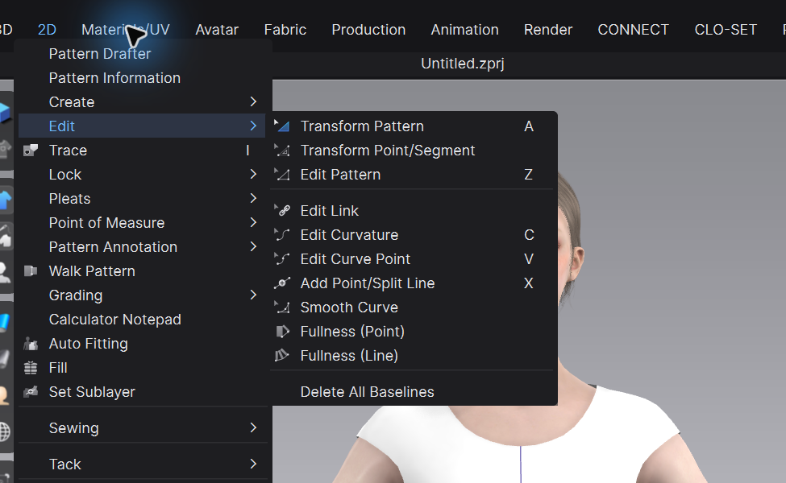
• Transform Pattern: 패턴 전체의 위치·회전·크기를 바꿉니다. • Transform Point/Segment: 특정 점이나 선분 단위로 이동합니다. • Edit Pattern: 외곽선을 직접 다듬습니다. • Edit Link: 대칭·연결 편집 관계를 관리합니다. 패턴 전체를 링크하는 경우가 아닌 선분 별로 링크를 제어할때 사용합니다. • Edit Curvature / Edit Curve Point / Smooth Curve: 암홀·넥라인처럼 곡선 품질이 중요한 곳을 다듬습니다. • Add Point/Split Line: 선분에 점을 추가하거나 나눕니다. • Fullness (Point) / Fullness (Line): 플레어와 셔링처럼 분량을 퍼뜨립니다. • Delete All Baselines: 기준선을 모두 지웁니다. 선택 기준은 간단합니다. 전체를 움직이면 Transform Pattern, 한 구간의 실루엣이면 Point/Segment나 Edit Pattern, 곡선의 흐름이면 Curvature, 실제 분량을 늘리면 Fullness를 고릅니다.
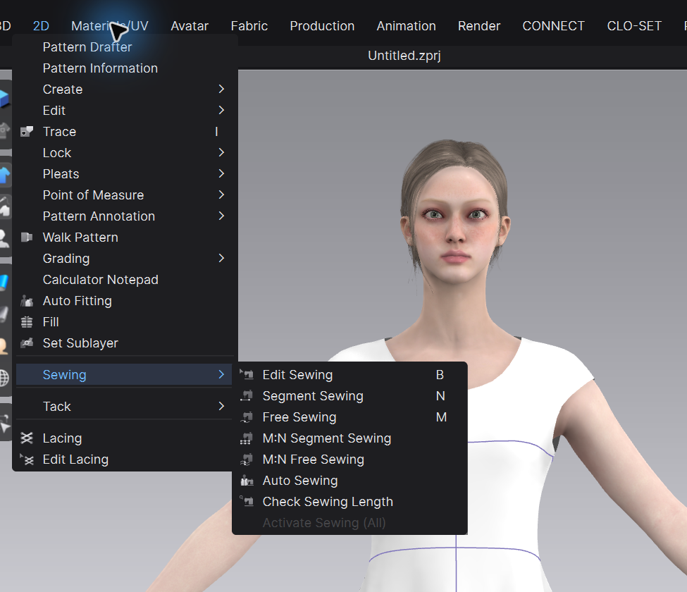
• Edit Sewing: 이미 만든 봉제 관계를 수정합니다. • Segment Sewing: 선분 전체끼리 빠르게 봉제합니다. • Free Sewing: 선분 일부나 서로 다른 길이의 구간을 자유롭게 연결합니다. • M:N Segment Sewing / M:N Free Sewing: 여러 선분과 여러 선분을 한 관계로 연결합니다. • Auto Sewing: 조건이 맞는 패턴의 자동 봉제를 보조합니다. 자동 결과의 방향과 짝은 반드시 확인하세요. • Check Sewing Length: 연결된 봉제선의 길이 차이를 검사합니다. • Activate Sewing (All): 비활성 봉제 관계를 다시 활성화합니다.
5. Materials/UV — UV와 부자재·표면 디테일
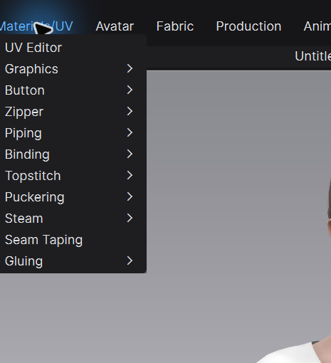
• UV Editor: 텍스처 좌표와 패턴 배치를 확인·정리합니다. • Graphics: 프린트·로고·데칼 그래픽을 배치하고 변형합니다. • Button / Zipper: 단추와 지퍼를 생성·편집합니다. • Piping / Binding: 파이핑과 바인딩 마감을 만듭니다. • Topstitch / Puckering: 스티치 표현과 봉제 주름 효과를 다룹니다. • Steam: 원단의 수축 반응을 시각적으로 적용합니다. 2D 생산 패턴 치수를 자동 수정하는 기능으로 보면 안 됩니다. • Seam Taping / Gluing: 테이핑과 접착 구조를 설정합니다. 이 메뉴는 “보이는 디테일”이 많지만, 실루엣·핏·봉제가 안정된 뒤 넣는 편이 효율적입니다.
6. Avatar — 체형·측정·포즈·모션·사용자 아바타
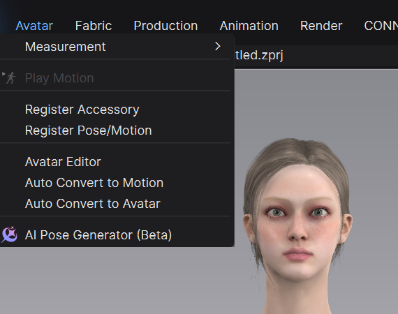
• Measurement: 아바타 치수를 측정하고 관리합니다. • Play Motion: 적용된 모션을 재생합니다. 모션이 없으면 비활성화될 수 있습니다. • Register Accessory: 액세서리를 아바타용 자산으로 등록합니다. • Register Pose/Motion: 포즈와 모션 자산을 등록합니다. • Avatar Editor: CLO 아바타의 체형을 편집합니다. • Auto Convert to Motion: 외부 FBX 모션을 CLO 아바타용 모션으로 변환합니다. • Auto Convert to Avatar: 사용자 캐릭터를 CLO 아바타 형식으로 변환합니다. 변환 과정에서 현재 3D 창의 아바타가 정리될 수 있으므로 사본에서 진행하세요. • AI Pose Generator (Beta): 이미지 기반으로 포즈 생성을 보조합니다. 관절 꺾임과 의상 관통을 최종 검수해야 합니다. 아바타를 선택하면 Property Editor에서 Skin Offset과 마찰 같은 충돌 조건을 볼 수 있습니다. 같은 옷도 체형·포즈·Skin Offset이 달라지면 핏이 달라집니다.
Mixamo를 쓸 때는 두 경로를 섞지 마세요. CLO 기본 아바타에 움직임만 쓰려면 Mixamo FBX 모션을 Auto Convert to Motion으로 변환합니다. Mixamo에서 리깅한 사용자 캐릭터 자체를 쓰려면 FBX 아바타·스켈레톤·스킨 웨이트·축·단위를 함께 확인합니다. CLO 기본 아바타용 MTN이 임의의 사용자 리그에 항상 맞는 것은 아닙니다.
7. Fabric — 텍스처와 CLOFAB 원단 데이터
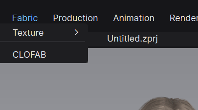
• Texture: 원단 텍스처 관련 기능으로 이동합니다. • CLOFAB: CLOFAB 원단 데이터를 검색·활용합니다. 원단은 Object Browser의 Fabric 목록에서 선택한 뒤 Property Editor에서 세부값을 조정하는 경우가 많습니다. Stretch, Shear, Bending, Density, Thickness 같은 물리값은 “어떻게 움직이는가”를, Base Color·Normal·Roughness·Opacity 같은 재질값은 “어떻게 보이는가”를 결정합니다.
8. Production — 컬러웨이·BOM·그레이딩 검토
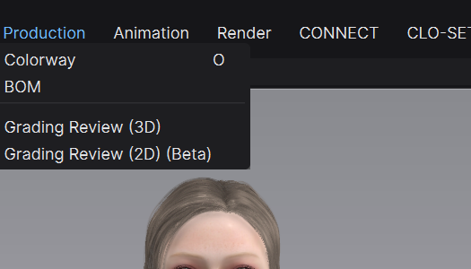
• Colorway: 한 디자인의 색상·소재 조합을 여러 버전으로 관리합니다. • BOM: 사용 원단과 부자재 정보를 Bill of Materials 형태로 정리합니다. • Grading Review (3D): 사이즈 변화가 3D 핏과 실루엣에 미치는 영향을 비교합니다. • Grading Review (2D) (Beta): 사이즈별 2D 패턴 변화를 검토합니다. Production 메뉴는 예쁜 화면을 만드는 메뉴라기보다, 디자인 정보를 여러 사이즈·컬러·부자재 기준으로 전달하고 검수하는 메뉴입니다.
9. Animation — 의상 시뮬레이션을 시간축으로 기록
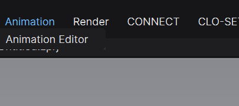
현재 화면의 Animation 메뉴는 Animation Editor로 들어가는 입구입니다. 별도의 예전 “Animation 모드”를 찾기보다 이 메뉴를 사용하세요. Animation Editor에서는 아바타 모션을 재생하면서 의상 시뮬레이션을 프레임 단위로 기록하고 확인합니다. 정지 포즈에서도 옷이 불안정한 상태라면 긴 모션부터 기록하지 말고 첫 프레임의 배치·충돌·봉제 문제를 먼저 해결하세요. Keyframe Animation은 카메라와 일부 장면 조건도 시간에 따라 제어할 수 있습니다.
10. Render — 빠른 확인과 최종 출력
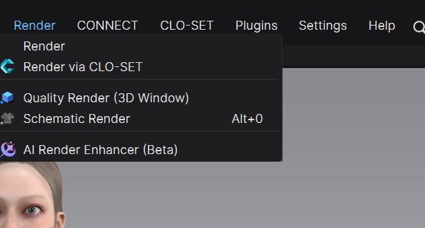
• Render: 렌더 창과 최종 렌더 설정으로 들어갑니다. • Render via CLO-SET: CLO-SET의 렌더 기능을 사용합니다. • Quality Render (3D Window): 3D 작업창에서 품질을 높여 빠르게 확인합니다. 최종 저장 출력과 동일하다고 단정하면 안 됩니다. • Schematic Render: 의복 구조가 잘 보이는 도식형 렌더를 만듭니다. • AI Render Enhancer (Beta): 렌더 향상을 보조하는 베타 기능입니다. 디자인과 디테일 보존 여부를 원본과 비교하세요. 최종 출력 전에는 관통·법선·앞뒷면·UV·텍스처 스케일·렌더 두께·카메라·조명·출력 크기를 확인합니다. 해상도만 올려도 패턴이나 충돌 오류는 고쳐지지 않습니다.
11. CONNECT — EveryWear 연동
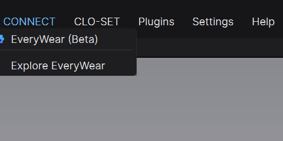
• EveryWear (Beta): EveryWear 연동 기능으로 이동합니다. • Explore EveryWear: EveryWear 콘텐츠를 탐색합니다. Beta 표기가 있는 기능은 버전과 계정 조건에 따라 화면·지원 범위가 바뀔 수 있습니다. 중요한 프로젝트의 유일한 전달 경로로 삼기 전에 작은 테스트 파일로 확인하세요.
12. CLO-SET — 업로드·버전·렌더·테크팩
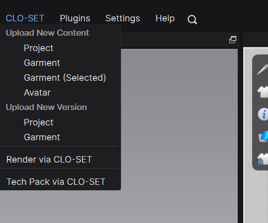
• Upload New Content: Project, Garment, 선택한 Garment, Avatar를 새 콘텐츠로 올립니다. • Upload New Version: 기존 Project나 Garment에 수정 버전을 연결합니다. • Render via CLO-SET: CLO-SET 렌더를 실행합니다. • Tech Pack via CLO-SET: CLO 데이터를 기반으로 테크팩 작업으로 연결합니다. 같은 디자인의 수정본을 매번 New Content로 올리면 이력이 갈라집니다. 새 디자인은 New Content, 같은 디자인의 수정은 New Version으로 구분하세요.
13. Plugins — 외부 기능과 제조 장비 연결
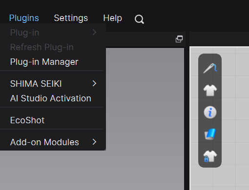
• Plug-in / Refresh Plug-in / Plug-in Manager: 설치된 플러그인을 실행·새로고침·관리합니다. • SHIMA SEIKI: 시마세이키 관련 워크플로에 연결합니다. • AI Studio Activation: AI Studio 관련 활성화를 관리합니다. • EcoShot: EcoShot 연동 기능입니다. • Add-on Modules: 추가 모듈을 관리합니다. 플러그인 메뉴가 안 보이거나 비활성이라면 CLO 버전, 플러그인 버전, 설치 경로, 라이선스·로그인 상태를 함께 확인하세요.
14. Settings — 언어·사용자 설정·표시·환경설정
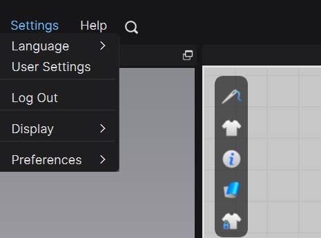
• Language: 인터페이스 언어를 바꿉니다. • User Settings: 단축키, 입력, 기본 동작 등 사용자 설정을 엽니다. • Log Out: 현재 CLO 계정에서 로그아웃합니다. • Display: 화면 표시와 관련된 하위 설정으로 이동합니다. • Preferences: 프로그램 전반의 환경설정을 엽니다. 수업이나 협업에서 메뉴 위치가 서로 다르면 먼저 언어·워크스페이스·표시 설정이 같은지 확인하세요. 무작정 초기화하기 전에 현재 단축키와 사용자 설정을 기록해 두는 편이 안전합니다.
15. Help — 공식 매뉴얼·튜토리얼·버전 정보
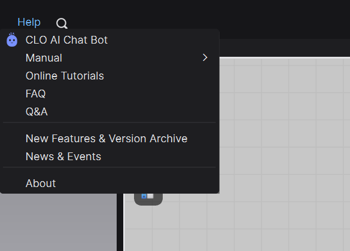
• CLO AI Chat Bot: CLO 사용 질문을 보조합니다. 결과는 현재 버전 메뉴와 다시 대조하세요. • Manual: 공식 기능 문서를 엽니다. • Online Tutorials: 공식 튜토리얼로 이동합니다. • FAQ / Q&A: 자주 묻는 질문과 사용자 문의를 확인합니다. • New Features & Version Archive: 새 기능과 과거 버전 변경점을 확인합니다. • News & Events: CLO 소식과 이벤트를 봅니다. • About: 설치된 정확한 버전과 빌드 정보를 확인합니다. 영상에서 본 메뉴가 없을 때는 About에서 버전을 확인한 뒤 Version Archive에서 기능명 변경이나 위치 이동을 먼저 찾아보세요.
상단 메뉴 밖에서 꼭 알아둘 화면 요소
• 3D Garment Window: 아바타 위 의상, 시뮬레이션, 관통, 모션 결과를 보는 화면입니다. • 2D Pattern Window: 패턴 외곽선·내부선·다트·봉제선을 설계하는 화면입니다. • Object Browser: Garment, Fabric, Avatar, Scene, Environment 등 프로젝트 대상을 찾습니다. • Property Editor: 현재 선택한 대상의 속성을 표시합니다. 값이 안 보이면 먼저 선택 대상을 확인하세요. • 3D 세로 보기 아이콘: Textured, Monochrome, Translucent, Wireframe, Stress, Strain, Fit 등 표시 모드를 바꿉니다. 안쪽 겹침과 뒤집힌 면은 Translucent·Monochrome·Wireframe을 번갈아 보며 확인합니다. Property Editor는 고정된 설정창이 아닙니다. 패턴을 선택했는지, 아바타를 선택했는지, Fabric이나 Scene을 선택했는지에 따라 보이는 항목이 바뀝니다.
목적별 빠른 찾기
• 새 패턴·내부선·다트·시접: 2D > Create • 패턴 전체·점·곡선·분량 수정: 2D > Edit • 봉제 생성과 길이 검사: 2D > Sewing • 3D 의상 전체/부분 선택: 3D > Select • 아바타 표면에서 기준 패턴 만들기: 3D > 3D pen > 3D Pen (Avatar) / Flatten • 꼬인 초기 배치 다시 잡기: 3D > Arrangement • 안쪽·메쉬·장력 확인: 3D 창 세로 보기 아이콘 • 외부 아바타·포즈·모션: Avatar • 시간축 기록: Animation > Animation Editor • 최종 이미지·영상: Render • 협업 업로드·버전·테크팩: CLO-SET
공식 매뉴얼에서 더 보기
Select Mesh와 선택 메쉬 기능↗3D Pen (Avatar)과 Flatten↗Strengthen / Unstrengthen↗Solidify↗3D 창 보기 모드와 세로 아이콘↗Avatar Properties와 Skin Offset·마찰↗Auto Convert to Motion↗Auto Convert to Avatar↗Record Animation↗V-Ray 이미지·영상 출력 속성↗CLO에서 CLO-SET으로 직접 업로드↗이 글은 메뉴의 위치와 역할을 찾는 사전입니다. 기능을 실행했는데 결과가 이상하면 “버튼을 더 찾기”보다 지금 선택한 대상과 Property Editor, 앞·뒷면, 봉제 방향, 초기 배치, 물성 순서로 확인하면 원인을 훨씬 빨리 좁힐 수 있습니다.